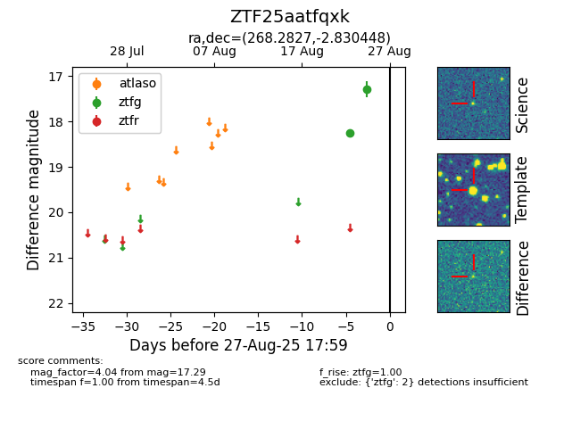

Target ZTF25aatfqxk at 2025-08-27 17:59, see:
FINK: fink-portal.org/ZTF25aatfqxk
Lasair: lasair-ztf.lsst.ac.uk/objects/ZTF25aatfqxk
ALeRCE: alerce.online/object/ZTF25aatfqxk
alt names
ZTF25aatfqxk (ztf,fink)
coordinates:
equatorial (ra, dec) = (268.2827,-2.83045)
galactic (l, b) = (23.6159,+11.60711)
photometry
last ztfg=17.29
2 ztfg detections
